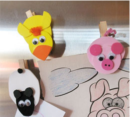

可爱的动物衣夹手工小制作
小朋友们，想不想来制作一些可爱的动物衣夹呢?下面，亲亲宝贝小编来介绍一些可爱的小动物衣夹的做法，便于整理一些孩子的作品或者票据哦!
- 你需要准备好：
- 动物磁力贴模板下载模板
- 木制晾衣夹
- 工艺泡沫纸，白色、黑色、橘色、浅粉和粉红色
- 6个小塑料眼珠
- 黑色小绒球，用做小羊羔的尾巴
- ½" 橙色绳绒线，用做小鸭子的毛发
- 3" 粉红色绳绒线
- 牙签 黑色笔 白乳胶 剪刀

做法：
- 1、将咖啡滤纸捏扁，放在盘子里或报纸上，以便吸水和油漆。放在纸巾上晾干备用。
- 2、将每个动物的身体粘贴到晾衣夹上。晾衣夹的末端要留出足够的空间，以便用手捏住。
- 3、将动物的头粘贴到其身体上。
- 4、要制作小鸭子，将翅膀粘贴到其身体两侧，将嘴喙粘贴到头部下方。在其前额粘贴两颗塑料眼珠和橘色绳绒线。
- 5、要制作小羊羔，将耳朵和笑容求做的尾巴粘贴到身体上，然后粘贴塑料眼珠。
- 6、要制作小猪，将耳朵和口鼻部粘贴到身体上，用黑色笔或细尖马克笔在口鼻部上画出鼻孔。粘贴塑料眼珠。
- 7、制作小猪的尾巴，将粉红色细绒线缠绕在牙签上。缠好后从牙签上取下，稍稍向外拉伸，剪下需要的部分，塞进小猪的身体和衣夹之间，用胶水固定。
- 8、使用前要全部晾干。